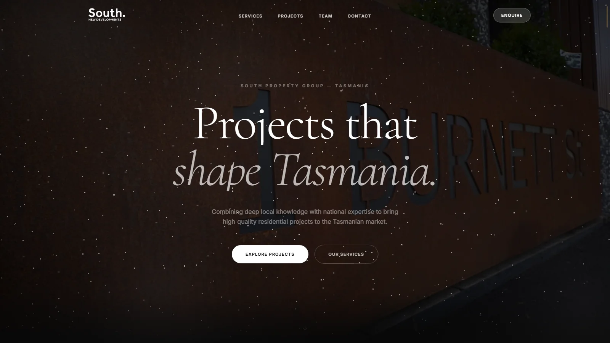
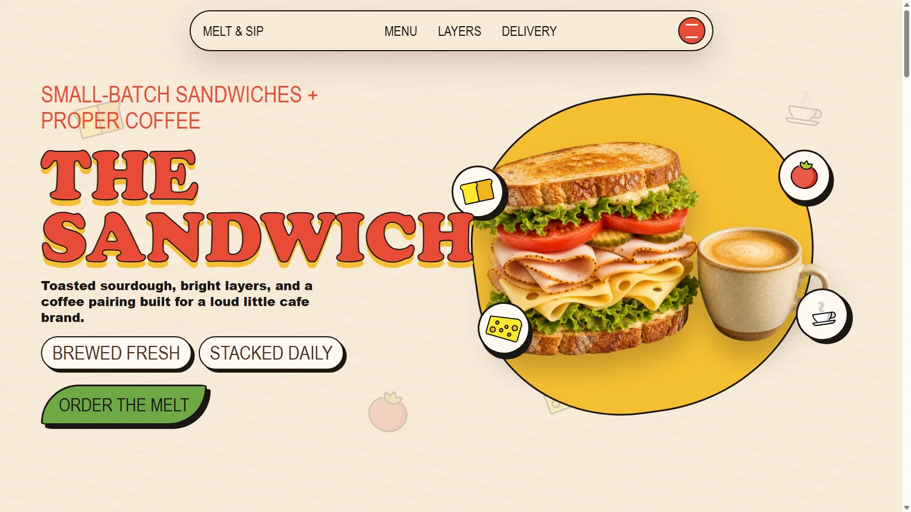
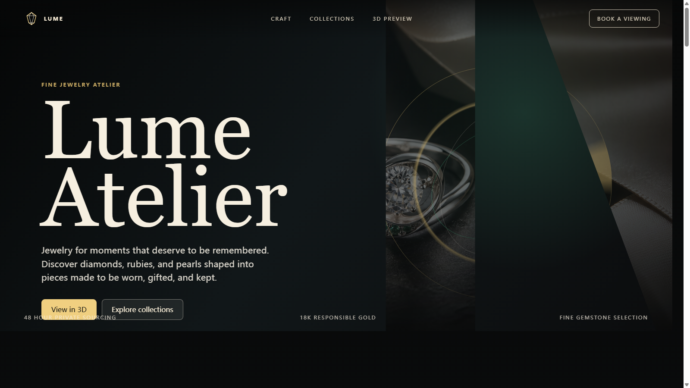

01South Property Website
Premium residential collection website for Tasmanian developments, combining refined presentation with a clear enquiry path.
Open Live SiteSpatial Creative Developer
A Software Engineering Honours graduate from Monash University who builds Next.js, GSAP, and Three.js interfaces with a belief that creativity keeps technology human.
Profile Room
I enjoy building polished interfaces, spatial interactions, and motion-rich websites that feel clear, useful, and memorable.
Technical Curiosity
I enjoy studying new tools, frameworks, and interaction patterns, then testing how they can improve real user experience. For me, creative development is not only about visual style. It is also about stronger functionality, smoother workflows, better performance, and web systems that keep growing as the idea grows.
Project Gallery

01Premium residential collection website for Tasmanian developments, combining refined presentation with a clear enquiry path.
Open Live Site
02A bold sandwich and coffee landing page with layered food visuals, playful motion, and a loud cafe brand direction.
Open Live Site
03A refined fine-jewelry landing experience with a dark luxury palette, collection storytelling, and a 3D preview direction.
Open Live SiteContact Room
I am open to creative web development, WordPress builds, WebGL experiments, and practical website systems that need both imagination and reliable execution.